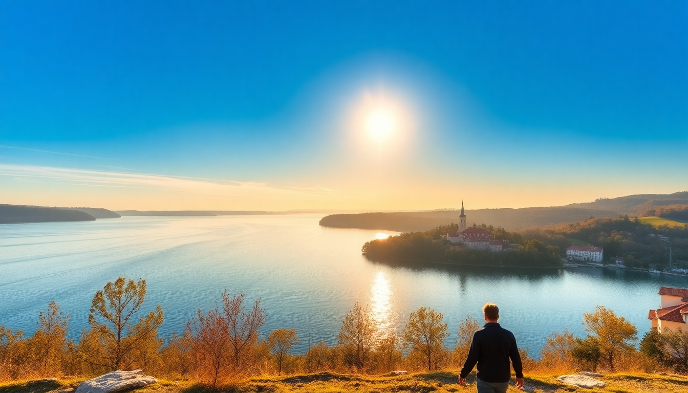

Best Time to Visit Plitvice Lakes: A Seasonal Guide

I’ve been to Plitvice Lakes three times now—once in July, once in October, and once in early May. Each trip was completely different. The crowds, the light, the water levels, even the smell of the forest changes with the season. If you’re planning a trip to Croatia and want to know when to actually go, here’s what I learned from standing in line for the shuttle bus and getting soaked in a spring downpour.
When is the best time to visit Plitvice Lakes for good weather?
Late spring (May) and early autumn (September to mid-October) give you the most comfortable hiking conditions. In May, temperatures hover around 18–22°C, and the waterfalls are roaring from snowmelt. October is cooler—10–15°C—but the foliage turns the park into a patchwork of gold and rust.
I’ve hiked the lower lakes in July when it hit 30°C, and the boardwalks felt like a sauna with no shade. On the flip side, I’ve also been there in late November and found the upper trails icy and slippery. If you want dry trails and a jacket you can tie around your waist, aim for May or September.
- May: Snowmelt fills the waterfalls, wildflowers bloom, and you can still find parking at Entrance 1 before 9 AM.
- September: Warm days, thinner crowds after the school holidays, and the boardwalks are less slick.
- October: Peak autumn colors around the Kozjak Lake ferry crossing, but bring a windbreaker—gusts off the water are sharp.
How do crowds change by season?
July and August are a mess. I’m not exaggerating. When I visited in mid-July, the queue for the electric boat from P1 stretched for 40 minutes, and the wooden walkways over the lower lakes were bumper-to-bumper with selfie sticks. If you can only go in summer, arrive at Entrance 1 by 7:30 AM—the park opens at 7, and the first two hours are blissfully quiet.
Winter is the opposite. I walked into the park in early February and saw maybe 20 people total. The downside? Some trails and the boat service shut down. The upper lakes (around the Great Waterfall) were still accessible, but the lower lakes boardwalks were closed for maintenance.
- June–August: Peak season. Expect long lines at the shuttle bus stop near Station 1 and packed photo spots at Veliki Slap.
- November–March: Low season. You’ll have the park almost to yourself, but check the official website for trail closures—the route from Entrance 2 to the Great Waterfall is often open, but the ferry across Kozjak Lake may not run.
- April & October: Shoulder season. Moderate crowds, but you’ll still need to book tickets online in advance (I learned that the hard way in 2022 when I showed up and the lot was full by 10 AM).
What are the entry fees and how do they vary?
Plitvice Lakes uses dynamic pricing. In summer (July–August), a one-day adult ticket costs around €40. In winter (November–February), it drops to about €10–€15. Spring and fall fall in between—roughly €20–€25.
I paid €38 in July and felt it was steep for what I got (crowds, waiting). In October, I paid €22 and thought it was a steal. Kids under 7 are free year-round. If you’re staying in Zagreb or Split and doing a day trip, factor in the ticket cost—it’s not cheap, but it’s not a scam either.
- Summer (Jul–Aug): €40 per adult. Book online at least two days ahead.
- Winter (Nov–Feb): €10–€15. No need to pre-book, but check hours (usually 7 AM to 4 PM).
- Shoulder (Apr–Jun, Sep–Oct): €20–€30. I’d still book online—I saw a group turned away at Entrance 2 in late September because the lot was full.
Which entrance should I use and why?
There are two main entrances: Entrance 1 (lower lakes) and Entrance 2 (upper lakes). I’ve used both. Entrance 1 gets you right to the iconic boardwalks and the Great Waterfall (Veliki Slap), but the parking lot fills by 8:30 AM in peak season. Entrance 2 has a bigger lot and puts you closer to the shuttle bus and ferry to Kozjak Lake.
If you’re coming from Zagreb (about a 2-hour drive), you’ll hit Entrance 1 first. From Split (3 hours), Entrance 2 is more natural. I prefer Entrance 2 in shoulder season because you can take the shuttle to the upper lakes, hike down, and finish at the lower lakes without backtracking.
- Entrance 1: Best for quick access to the lower lakes and Veliki Slap. Limited parking—arrive before 8 AM in summer.
- Entrance 2: Larger parking, close to the Kozjak Lake ferry and shuttle. Better for a full-day clockwise loop.
- Pro tip: I stayed at Hotel Jezero (a 10-minute walk from Entrance 2) once, and being able to start hiking at 7:30 AM before the buses arrived made the whole trip better.
Can you visit Plitvice Lakes as a day trip from Zagreb or Split?
Yes, but it’s a long day. From Zagreb, it’s a 2-hour drive. From Split, it’s about 3 hours. I’ve done both. The Zagreb day trip is easier—you can leave at 7 AM, be in the park by 9, hike until 4, and be back in the city for dinner.
From Split, you’re looking at a 6-hour round trip drive, plus 4–5 hours in the park. I did it once in June and regretted it—I was exhausted and missed the last ferry across Kozjak Lake, which added an extra 2 km of walking. If you’re based in Split, consider staying overnight in the town of Plitvička Jezera or at Guesthouse Mirjana near Entrance 1.
- Zagreb to Plitvice: Use the A1 highway to Karlovac, then the D1 road. Total drive: 2 hours. No tolls on the D1.
- Split to Plitvice: A1 highway north to Gornja Ploča, then D1. Total drive: 3 hours. Toll is about €10 each way.
- Bus option: FlixBus runs direct from Zagreb bus station (2.5 hours, €12). From Split, you’ll need a transfer in Zadar—book a tour like the Plitvice Lakes Day Tour from Split if you don’t want to drive.
What should I pack for a Plitvice visit?
I’ve made the mistake of wearing jeans in the rain (never again). The boardwalks get slick, and the mist from the waterfalls soaks everything. In May, I wore trail runners and a light rain jacket—perfect. In October, I added thermal leggings under hiking pants.
Waterproof shoes are non-negotiable. I saw a woman in flip-flops try to cross the boardwalk near the lower lakes in July, and she slipped—her phone went into the water. Bring a reusable water bottle (there are refill stations at Entrance 1 and near the ferry dock) and snacks, because the on-site restaurant is overpriced and mediocre.
- Footwear: Waterproof hiking boots or trail runners. No sandals, even in summer.
- Layers: A fleece or merino wool base layer for spring/fall. In winter, add a down jacket.
- Rain gear: A packable rain jacket. I use a Patagonia Torrentshell—it’s light and packs small.
- Food: The Licko Kuca restaurant near Entrance 2 is decent for grilled meat, but I’d rather bring my own sandwiches and eat by the lake.
FAQ
Is Plitvice Lakes worth visiting in winter? Yes, if you don’t mind cold and potential snow. In February, the waterfalls freeze into icicles, and the trails are nearly empty. But the ferry and some boardwalks close, so you’ll only see about 60% of the park. I’d only go if you’re already in Zagreb or Zadar and want a quiet day in nature.
How long does it take to walk the main route? The standard “Program C” loop (Entrance 2 to upper lakes, ferry across Kozjak, lower lakes, shuttle back) takes 4–6 hours, depending on how often you stop for photos. I did it in 5 hours in May with a slow lunch break. In summer, add an hour for queues.
Can I swim in the lakes? No. Swimming is banned to protect the travertine formations and ecosystem. I saw a guy try it once near the lower lakes—a ranger whistled him out within 30 seconds. Stick to the boardwalks.
Conclusion
- Visit in May or September for the best balance of weather, water levels, and crowds.
- Avoid July and August unless you arrive before 8 AM—the queues at the shuttle and ferry are brutal.
- Use Entrance 2 if you’re driving from Split; Entrance 1 if you’re coming from Zagreb.
- Book tickets online in advance during shoulder and peak seasons—the lot fills by 10 AM.
- Pack waterproof shoes and a rain jacket every single time, even if the forecast says sun.